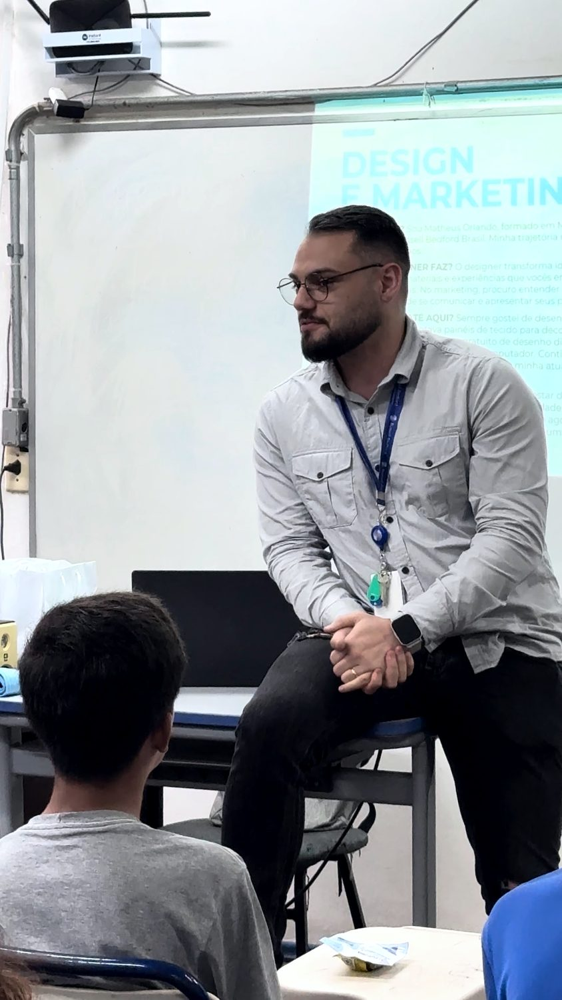

Workshop de 4 horas
Plano de marketing 2027
Prioridades, orçamento e execução para uma equipe pequena.

Listas de ações e calendários de posts não resolvem a falta de direção. Sem orçamento, responsáveis e critérios de decisão, o planejamento perde conexão com a capacidade da empresa.
Para quem faz sentido
Donos, gestores e responsáveis por marketing ou operação comercial de pequenos negócios que precisam transformar intenção em prioridades executáveis.
Objetivo do trabalho
Construir uma primeira versão do plano dos próximos 90 dias, conectada à direção de 2027 e aos recursos disponíveis.
O que é abordado
- Diagnóstico de 2026: realizado separado da previsão de fechamento.
- Direção anual e objetivo do trimestre; linha de base e indicadores.
- Priorização por impacto esperado, evidência, esforço e dependências.
- Orçamento: produção, mídia, ferramentas, tempo interno e contingência.
- Governança do marketing: quem executa, decide, consulta e acompanha.
- IA como apoio à análise e revisão, com fontes e decisão humana.
O que você desenvolve
- Separar evidência, hipótese e informação ausente.
- Converter um problema em objetivo verificável.
- Escolher até três prioridades e estimar verba e horas.
- Definir responsabilidades e revisar criticamente sugestões de IA.
Como acontece
Oficina de planejamento com decisões em sequência. O participante usa dados agregados do negócio ou caso fictício. Exercícios de cenário, revisão em pares e uma análise crítica de IA transformam o conteúdo em plano inicial.
Exercício prático
Cada negócio seleciona até três prioridades, distribui recursos e define entregas, responsáveis e prazos. Em seguida, testa um cenário de orçamento reduzido e revisa uma sugestão de IA, identificando promessas sem evidência e ações incompatíveis com a capacidade.
Agenda detalhada
| Atividade | Duração |
|---|---|
| Contexto e resultado do encontro | 15 min |
| Diagnóstico e objetivo | 30 min |
| Priorização e capacidade | 35 min |
| Orçamento e cenários | 35 min |
| Intervalo | 15 min |
| Responsabilidades e indicadores | 35 min |
| IA para revisar o plano | 35 min |
| Consolidação e revisão em pares | 30 min |
| Avaliação e compromisso | 10 min |
| Total | 4h |
O que fica depois
- Diagnóstico resumido e objetivo para o trimestre.
- Quadro de até três prioridades e decisões de exclusão.
- Orçamento preliminar com premissas e horas internas.
- Plano de 90 dias com responsabilidades, indicadores e ritmo de revisão.
Como avaliamos
O plano deve relacionar objetivo, prioridades, recursos e responsáveis. A avaliação considera também a capacidade de questionar informações e recomendações não sustentadas.
Como se preparar
Trazer, se disponíveis, dados agregados de vendas, custos de marketing e capacidade da equipe. O exercício de IA pode ser realizado manualmente, sem conta ou ferramenta paga.
Fundamento aplicado
Objetivos verificáveis, restrições de recursos e ciclos de revisão sustentam o planejamento. A direção anual se desdobra em um trimestre executável, preservando espaço para aprender e ajustar.
Escopo bem definido
Não entrega um plano anual validado, estudo financeiro, automação implantada ou acompanhamento por 90 dias. O orçamento é preliminar e precisa de cotações e aprovação da empresa.
A dinâmica pode ser adaptada ao setor e ao tamanho da turma. Necessidades de infraestrutura e acessibilidade são alinhadas antes da contratação.
Outros formatos
- Posicionamento e proposta de valorWorkshop de 4 horas. Por que o cliente escolheria sua empresa?
- Marketing e comercial integradosTreinamento com workshop de 4 horas. Do primeiro contato à próxima decisão.
- Sua empresa entrega valor. Sua marca consegue mostrar?Palestra participativa de 1 hora. Uma conversa prática sobre promessa, prova e experiência.
- Diagnóstico e plano de marketingConsultoria empresarial de 12 horas. Direção de marca e marketing para um negócio real.
Qual decisão precisa
ficar mais clara?
Conte o contexto, o público e o desafio. A proposta parte dessa conversa.